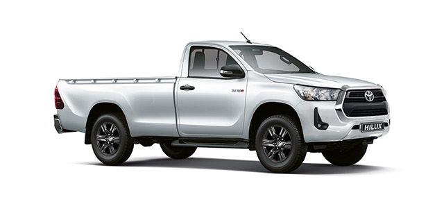
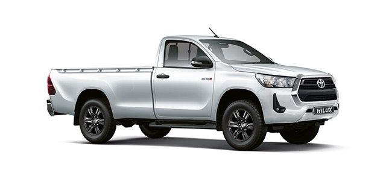

Price:R250 500
Stock Availability:10 670 in stock
The Toyota Hilux was first introduced in 1968 as a compact truck that could go anywhere. It even had an independent suspension instead of an on frame construction. Eventually, in the 90s, this compact truck became an excellent option for work fleets
| Weight | Color | Speed | 4530.5 lbs | Navy,White& Black | 105mph |
|---|